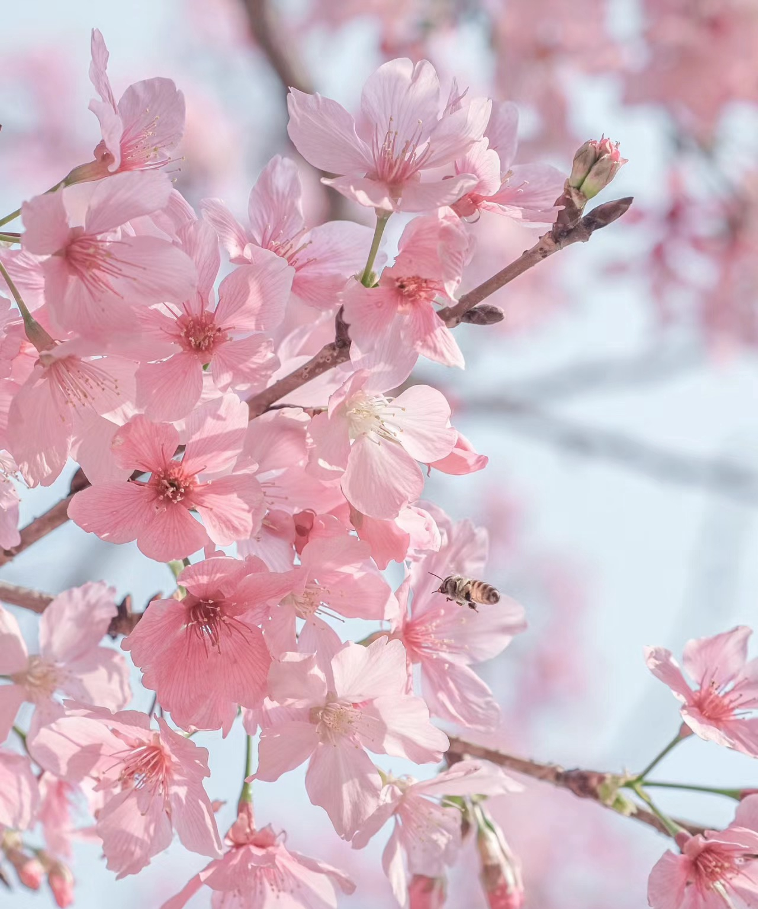
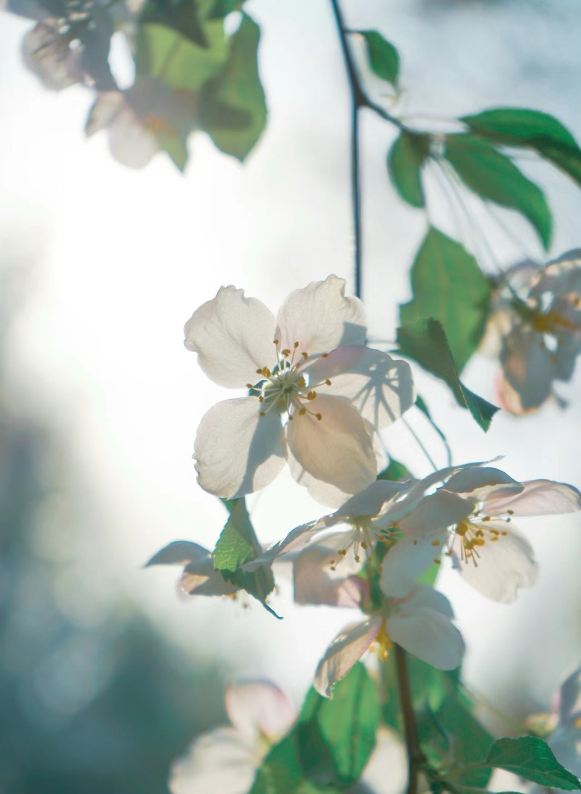
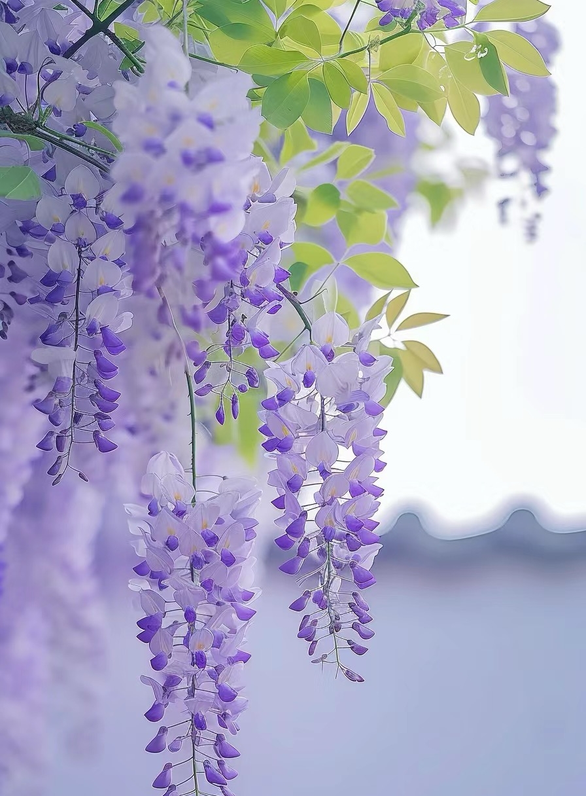
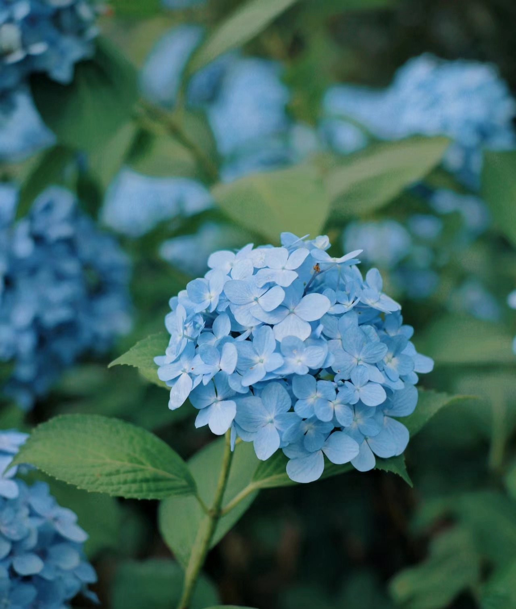
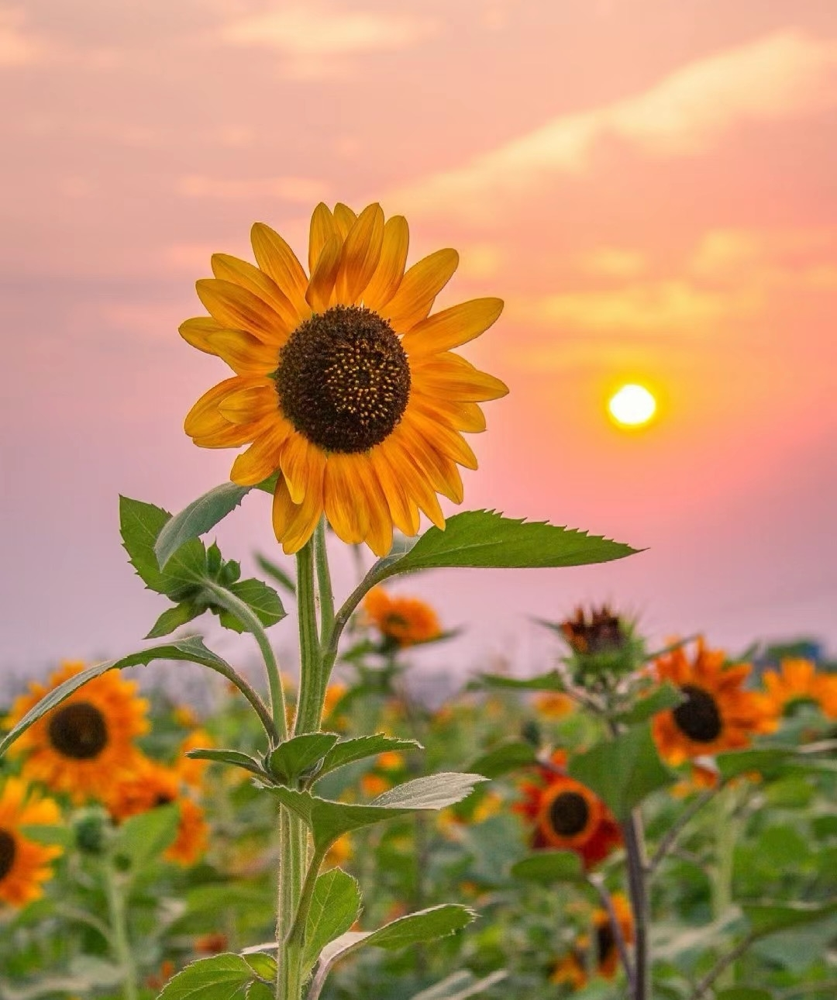
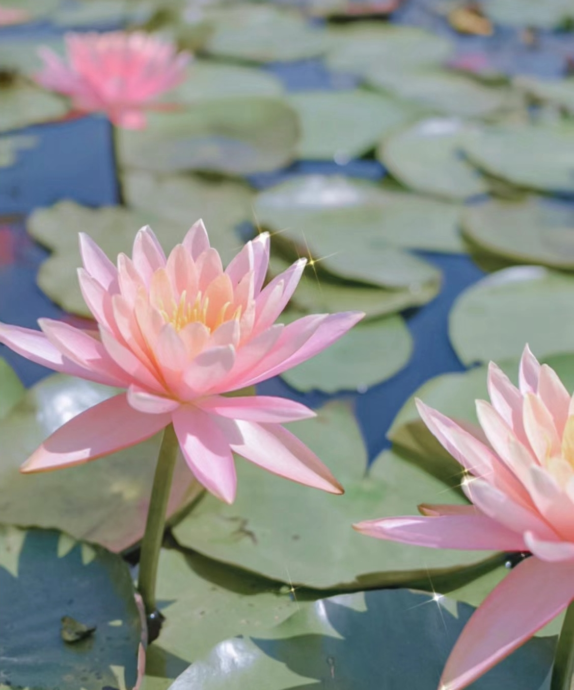

樱花
花语：美丽、短暂、浪漫。
“梅花谢后樱花绽，浅浅匀红。”——赵师侠《采桑子》

海棠
花语：幸福、希望。
“无人会得东风意，春色都将付海棠。”——杨万里《海棠坞》

紫藤
花语：团圆、美好。
“藤花无次第，万朵一时开。”——白居易《陈家紫藤花下赠周判官》

无尽夏
花语：浪漫、热情。
“疑是飞来蝶作球，绿阴深处白云浮。”——曹凤仪《白绣球》

向日葵
花语：阳光、快乐。
“更无柳絮因风起，唯有葵花向日倾。”——司马光《客中初夏》

睡莲
花语：纯洁、宁静。
“从来不著水，清净本因心。”——李颀《粲公院各赋一物得初荷》